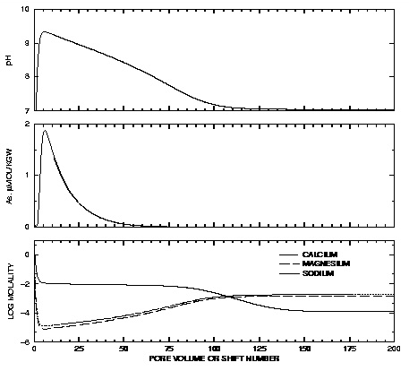

Example 14.--
Advective Transport, Cation Exchange, Surface Complexation, and Mineral Equilibria
This example uses the phase-equilibrium, cation-exchange, and surface-complexation reaction capabilities of PHREEQC in combination with advective transport capabilities to model the evolution of water in the Central Oklahoma aquifer. The geochemistry of the aquifer has been described by Parkhurst and others (1996). Two predominant water types occur in the aquifer, a calcium magnesium bicarbonate water with pH in the range of 7.0 to 7.5 in the unconfined part of the aquifer and a sodium bicarbonate water with pH in the range of 8.5 to 9.2 in the confined part of the aquifer. In addition, marine-derived sodium chloride brines exist below the aquifer and presumably in fluid inclusions and dead-end pore spaces within the aquifer. Large concentrations of arsenic, selenium, chromium, and uranium occur naturally within the aquifer. Arsenic is associated almost exclusively with the high-pH, sodium bicarbonate water type.
The conceptual model for the calculation of this example assumes that brines initially filled the aquifer. The aquifer contains calcite, dolomite, clays with cation exchange capacity, and hydrous-ferric-oxide surfaces; initially, the cation exchanger and surfaces are in equilibrium with the brine. The aquifer is assumed to be recharged with rainwater that is concentrated by evaporation and equilibrates with calcite and dolomite in the vadose zone. This water then enters the saturated zone and reacts with calcite and dolomite in the presence of the cation exchanger and hydrous-ferric-oxide surfaces.
The calculations use the advective transport capabilities of PHREEQC with just a single cell representing the saturated zone. A total of 200 pore volumes of recharge water are advected into the cell and, with each pore volume, the water is equilibrated with the minerals, cation exchanger, and the surfaces in the cell. The evolution of water chemistry in the cell represents the evolution of the water chemistry at a point near the top of the saturated zone of the aquifer.
Initial Conditions
Parkhurst and others (1996) provide data from which it is possible to estimate the moles of calcite, dolomite, and cation-exchange sites in the aquifer per liter of water. The weight percent ranges from 0 to 2 percent for calcite and 0 to 7 percent for dolomite, with dolomite much more abundant. Porosity is stated to be 0.22. Cation-exchange capacity for the clay ranges from 20 to 50 meq/100 g, with average clay content of 30 percent. For these example calculations, calcite was assumed to be present at 0.1 weight percent and dolomite at 3 weight percent, which, by assuming a rock density of 2.7 kg/L, corresponds to 0.1 mol/L for calcite and 1.6 mol/L for dolomite. The number of cation-exchange sites was estimated to be 1.0 eq/L.
The amount of arsenic on the surface was estimated from sequential extraction data on core samples (Mosier and others, 1991). Arsenic concentrations in the solid phases generally ranged from 10 to 20 ppm., which corresponds to 1.3 to 2.6 mmol/L arsenic. The number of surface sites were estimated from the amount of extractable iron in sediments, which ranged from 1.6 to 4.4 percent (Mosier and others, 1991). A content of 2 percent iron for the sediments corresponds to 3.4 mol/L of iron. However, most of the iron is in goethite and hematite, which have far fewer surface sites than hydrous ferric oxide. The fraction of iron in hydrous ferric oxide was arbitrarily assumed to be 0.1. Thus, a total of 0.34 mol of iron was assumed to be in hydrous ferric oxide, and using a value of 0.2 for the number of sites per mole of iron, a total of 0.07 mol of sites per liter was used in the calculations. A gram formula weight of 89 was used to estimate that the mass of hydrous ferric oxide was 30 g/L. The specific surface area was assumed to be 600 m
2
/g.
Table 37.
--Input data set for example 14
TITLE Example 14.--Transport with equilibrium_phases, exchange, and surface reactions
***********
PLEASE NOTE: This problem requires database file wateq4f.dat!!
***********
SURFACE_SPECIES
Hfo_wOH + Mg+2 = Hfo_wOMg+ + H+
log_k -15.
Hfo_wOH + Ca+2 = Hfo_wOCa+ + H+
log_k -15.
SOLUTION 1 Brine
pH 5.713
pe 4.0 O2(g) -0.7
temp 25.
units mol/kgw
Ca .4655
Mg .1609
Na 5.402
Cl 6.642 charge
C .00396
S .004725
As .05 umol/kgw
END
USE solution 1
EQUILIBRIUM_PHASES 1
Dolomite 0.0 1.6
Calcite 0.0 0.1
SAVE solution 1
# prints initial condition to the selected-output file
SELECTED_OUTPUT
-file ex14.sel
-reset false
-step
USER_PUNCH
-head m_Ca m_Mg m_Na umol_As pH
10 PUNCH TOT("Ca"), TOT("Mg"), TOT("Na"), TOT("As")*1e6, -LA("H+")
END
PRINT
# skips print of initial exchange and initial surface to the selected-output file
-selected_out false
EXCHANGE 1
-equil with solution 1
X 1.0
SURFACE 1
-equil solution 1
# assumes 1/10 of iron is HFO
Hfo_w 0.07 600. 30.
END
SOLUTION 0 20 x precipitation
pH 4.6
pe 4.0 O2(g) -0.7
temp 25.
units mmol/kgw
Ca .191625
Mg .035797
Na .122668
Cl .133704
C .01096
S .235153 charge
EQUILIBRIUM_PHASES 0
Dolomite 0.0 1.6
Calcite 0.0 0.1
CO2(g) -1.5 10.
SAVE solution 0
END
PRINT
-selected_out true
ADVECTION
-cells 1
-shifts 200
END
The brine that initially fills the aquifer was taken from Parkhurst and others (1996) and is given as solution 1 in the input data set for this example (table 37). The pure-phase assemblage containing calcite and dolomite is defined with the
EQUILIBRIUM_PHASES 1 data block. The brine is first equilibrated with calcite and dolomite and stored again as solution 1. The number of cation exchange sites is defined with
EXCHANGE 1 and the number of surface sites are defined with
SURFACE 1. The initial exchange and the initial surface composition are determined by equilibrium with the brine, after equilibration with calcite and dolomite (note that equilibration of exchangers and surfaces,
before
mineral equilibration, will yield different results due to buffering by the sorbed elements). The concentration of arsenic in the brine was determined by trial and error to give a total of approximately 2 mmol arsenic on the surface, which is consistent with the sequential extraction data. The database,
wateq4f.dat
(which includes the element arsenic and surface complexation constants from Dzombak and Morel, 1990), was used for all thermodynamic data except for two surface reactions. After initial runs it was determined that better results were obtained for arsenic concentrations in case the calcium and magnesium surface complexation reactions were removed. The
SURFACE_SPECIES data block was used to decrease the equilibrium constant for each of these two reactions by about 10 orders of magnitude. This effectively eliminated surface complexation reactions for calcium and magnesium. (Alternatively, these reactions could be removed from the default database.) This is justified if cations and anions do not compete for the same sites; in general competitive sorption between cations and anions is not well known.
Recharge Water
The water entering the saturated zone of the aquifer was assumed to be in equilibrium with calcite and dolomite at a vadose-zone  of 10
-1.5
. The fourth simulation in the input set (the simulation following the third
END statement) generates this water composition and stores it as solution 0 using
SAVE (table 37).
of 10
-1.5
. The fourth simulation in the input set (the simulation following the third
END statement) generates this water composition and stores it as solution 0 using
SAVE (table 37).
Advective Transport Calculations
The
ADVECTION data block (table 37) provides the necessary information to advect the recharge water into the cell representing the saturated zone. A total of 200 shifts is specified, which is equivalent to 200 pore volumes because there is only a single cell in this calculation.
The results of the calculations are plotted on figure 14. During the initial 5 pore volumes, the high concentrations of sodium, calcium, and magnesium decrease such that sodium is the dominant cation and calcium and magnesium concentrations are small. The pH increases to more than 9.0 and arsenic concentrations increase to close to 2  mol/kgw. Over the next 45 pore volumes the pH gradually decreases and the arsenic concentrations decrease to negligible concentrations. At about 100 pore volumes, the calcium and magnesium become the dominant cations and the pH stabilizes at the pH of the infilling recharge water.
mol/kgw. Over the next 45 pore volumes the pH gradually decreases and the arsenic concentrations decrease to negligible concentrations. At about 100 pore volumes, the calcium and magnesium become the dominant cations and the pH stabilizes at the pH of the infilling recharge water.

Figure 14.
--Results of transport simulation of the chemical evolution of ground water due to calcium magnesium bicarbonate water inflow to an aquifer initially containing a brine, calcite and dolomite, a cation exchanger, and a surface that complexes arsenic.
The advective transport calculations produce three types of water which are similar to water types observed in the aquifer: the initial brine, a sodium bicarbonate water, and a calcium and magnesium bicarbonate water. The calculated pH values are consistent with observations of aquifer water. In the sodium dominated waters, the calculated pH is generally greater than 8.0 and sometimes as high as 9.2; in the calcium magnesium bicarbonate waters, the pH is slightly greater than 7.0. Sensitivity calculations indicate that the maximum pH depends on the amount of exchanger present. Decreasing the number of cation exchange sites decreases the maximum pH. Simulated arsenic concentrations are similar to values observed in the aquifer, where the maximum concentrations are 1 to 2  mol/kgw. Lower maximum pH values produce lower maximum arsenic concentrations. The stability constant for the surface complexation reactions have been taken directly from the literature; a decrease in the log
K
for the predominant arsenic complexation reaction tends to decrease the maximum arsenic concentration as well. In conclusion, the model results, which were based largely on measured values and literature thermodynamic data, provide a satisfactory explanation of the variation in major ion chemistry, pH, and arsenic concentrations within the aquifer.
mol/kgw. Lower maximum pH values produce lower maximum arsenic concentrations. The stability constant for the surface complexation reactions have been taken directly from the literature; a decrease in the log
K
for the predominant arsenic complexation reaction tends to decrease the maximum arsenic concentration as well. In conclusion, the model results, which were based largely on measured values and literature thermodynamic data, provide a satisfactory explanation of the variation in major ion chemistry, pH, and arsenic concentrations within the aquifer.
| Next|| Previous || Top |